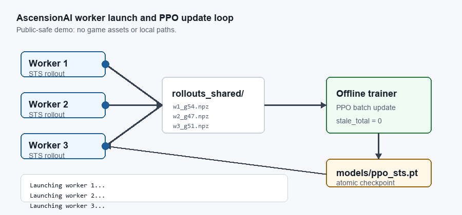

Results Dashboard
Static viewer for fixed-seed comparisons, PPO metrics, BC validation curves, and local CSV uploads.
Open dashboardAscensionAI wraps a live desktop game in a training system with behavior cloning, PPO fine-tuning, action masking, parallel rollout workers, checkpoint-aware offline updates, deterministic evaluation, and public experiment reporting.
June 2, 2026: deck-building is now learned, not heuristic. The observation expanded to 717-d with a per-card deck count vector, and card removal + upgrade choices moved from the heuristic to the RL policy, paired with a potential-based deck-quality reward. The model was warm-transferred 585→717 (behavior preserved) and now trains continuously, hands-off, on a self-healing GCP spot VM. Last fixed-seed eval (pre-Path-2, 585-d): 38.1% boss WR, 20% Act 2 reach.
Static viewer for fixed-seed comparisons, PPO metrics, BC validation curves, and local CSV uploads.
Open dashboardTrainer/worker topology, checkpoint sync, stale rollout rejection, crash handling, and scaling points.
Open docs717-d per-card deck vector lets the policy see its exact deck; card removal & upgrade are now RL-controlled with a potential-based deck-quality reward, warm-transferred from the 585-d model.
Read Path 2 notesThe worker/trainer stack runs headless on a GPU-less GCP spot VM via Xvfb: one-shot installer, per-worker displays, Java 8, and spot preemption recovery.
Read deployment notesReproducible summaries for BC baseline, parallel PPO, and fixed-seed evaluation.
Open reportsPlain-English reference for the training, evaluation, environment, plotting, and logging scripts.
Read script guidev0.8 — learned deck-building (§20): 717-d deck vector, RL-controlled removal/upgrade, deck-quality reward; headless cloud deployment (§19); 19 monster powers.
Read writeup · PDFMore projects, background, and contact information.
Visit justinchan.dev
AscensionAI runs as a local distributed training loop: live game workers write checkpoint-tagged rollout files, the offline trainer consumes fresh batches, saves an updated checkpoint, and workers reload the policy for the next collection cycle.
The last fixed-seed benchmark below was measured on the 585-d model (38.1% boss WR, 20% Act 2 reach, best floor 46). Current work (Path 2) makes deck-building learnable — 717-d per-card deck vector, RL-controlled removal/upgrade, and a deck-quality reward — and the warm-transferred 717-d model is training continuously on the spot VM. The deck-vector inputs are integrating steadily; a fresh fixed-seed eval will follow once they mature.
200 eval games: 14.7 avg floor, 38.1% boss WR, 69.6% elite WR, 20% Act 2 reach. 8 runs past floor 30, best floor 46. Boss WR nearly doubled from prior eval.
View report200 eval games: 14.83 avg floor, 21.7% boss WR. Boss reward shaping for all bosses, BC anchor auto-tuned. Before heal reward fix.
View report150 eval games: 15.78 average floor, 39% boss conversion, 26.0% Act 2 reach rate.
View evaluation